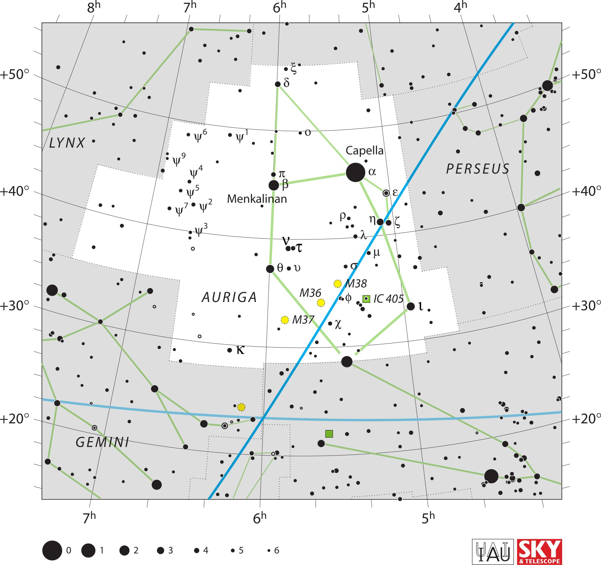

<div data-role="page" id="auriga" data-theme="a">

	<div data-role="header">
		<a href="#home" data-icon="back" data-rel="back">Back</a>
		<h1>Auriga</h1>
		<a href="#home" data-icon="home">Home</a>
	</div>

	<div data-role="content">
		<div class="cssImageMap">
			

			<a href="../messier/m36.html" class="messier" data-x="1000"
				data-y="960" data-width="100" data-height="50"></a>

			<a href="../messier/m37.html" class="messier" data-x="930"
				data-y="1040" data-width="150" data-height="70"></a>

			<a href="../messier/m38.html" class="messier" data-x="1110"
				data-y="920" data-width="150" data-height="70"></a>


			<a href="lynx.html" class="constellation" data-side="left"
				data-x="150" data-y="440" data-width="200" data-height="70"></a>

			<a href="gemini.html" class="constellation" data-side="left"
				data-x="230" data-y="1450" data-width="250" data-height="70"></a>

			<a href="perseus.html" class="constellation" data-side="right"
				data-x="1480" data-y="530" data-width="250" data-height="70"></a>

		</div>

		<div id="here">
			<h2>Auriga</h2>

			<p>Image Credit: IAU and Sky & Telescope magazine (Roger Sinnott
				& Rick Fienberg)
		</div>
	</div>
</div>